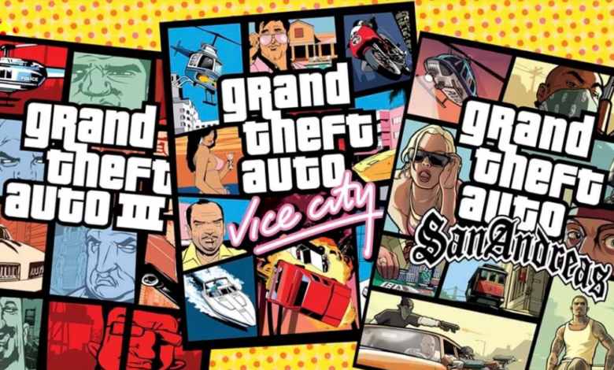
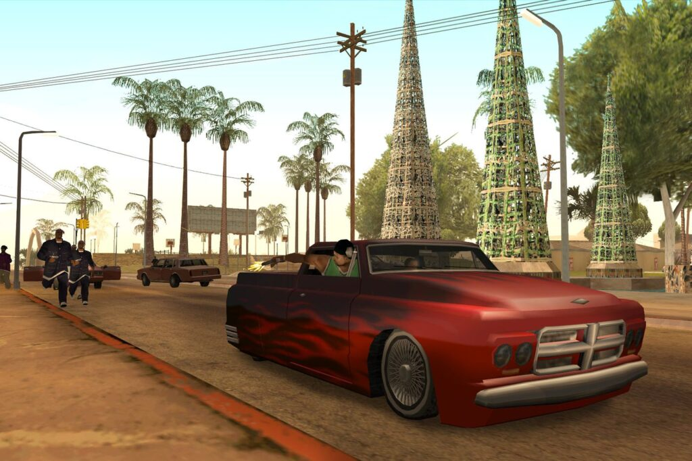
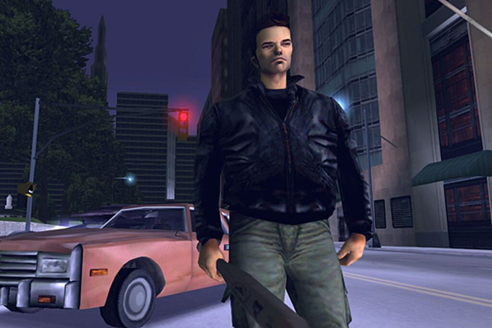

Si bien toda la interfaz de usuario original se actualizará para que se vea más nítida y legible en las pantallas modernas, la tendencia es que estos remasterizadores se esfuercen por mantener la integridad de su código original tanto como sea posible. En otras palabras, la trilogía GTA Remastered probablemente no contendrá remakes completos con la tecnología moderna del motor GTA 5, pero seguirá siendo una buena manera de disfrutar de esos títulos clásicos.

Si bien toda la interfaz de usuario original se actualizará para que se vea más nítida y legible en las pantallas modernas, la tendencia es que estos remasterizadores se esfuercen por mantener la integridad de su código original tanto como sea posible. En otras palabras, la trilogía GTA Remastered probablemente no contendrá remakes completos con la tecnología moderna del motor GTA 5, pero seguirá siendo una buena manera de disfrutar de esos títulos clásicos.
La historia de Kotaku vinculada anteriormente sugiere que GTA Remastered Trilogy se está desarrollando para “una multitud de plataformas, incluida la Nintendo Switch portátil”. Tambien parece probable que la trilogía completa también llegue a las consolas de la generación actual, las consolas de última generación y las PC.

Todavía no, pero asumimos que la información se compartirá una vez que Rockstar anuncie oficialmente los detalles del proyecto. A pesar de la explosión de alto perfil de Kotaku en agosto, la trilogía GTA Remastered ha sido una especie de secreto a voces en la comunidad de GTA durante bastante tiempo. Ya en 2019, Ruffian Games, propiedad de Rockstar (ahora llamado Rockstar Dundee) tuiteó que el equipo estaba contratando para trabajar en un próximo proyecto de Rockstar Games. El detalle más importante es, que Ruffian tiene una larga historia como un estudio de apoyo, ayudando a terminar los proyectos como Halo y Crackdown 3 .
Regreso a ruta local